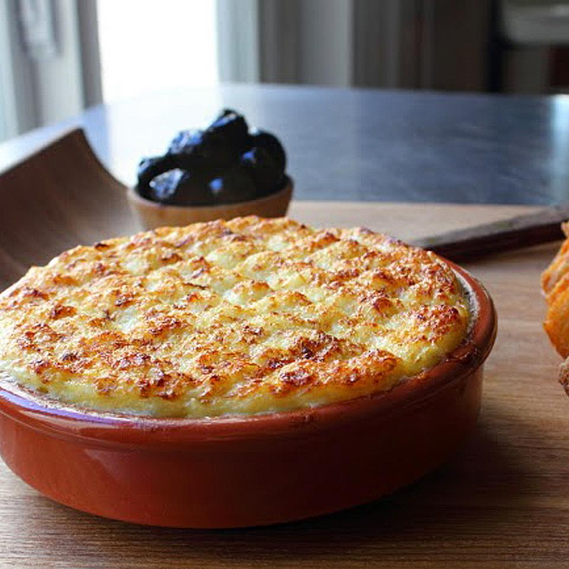

WMiam Miam Morue

Description
There are certain things that if I see on a menu, I will almost always order them, and brandade is one of those things
This should always be baked and eaten piping hot, ideally with some homemade crostini.
Ingredients
- 1 pound salted cod fish
- 2 bay leaves
- 1 teaspoon lemon zest
Steps
- Preheat oven to 450 degrees F (230 degrees C). Lightly grease a baking dish and set dish on a baking sheet.
- Rinse salt cod under cold water, transfer to a sealable container and cover with several inches of cold water.
- Stir cod, milk, thyme, bay leaves, and cayenne pepper together in a pot over medium-high heat.